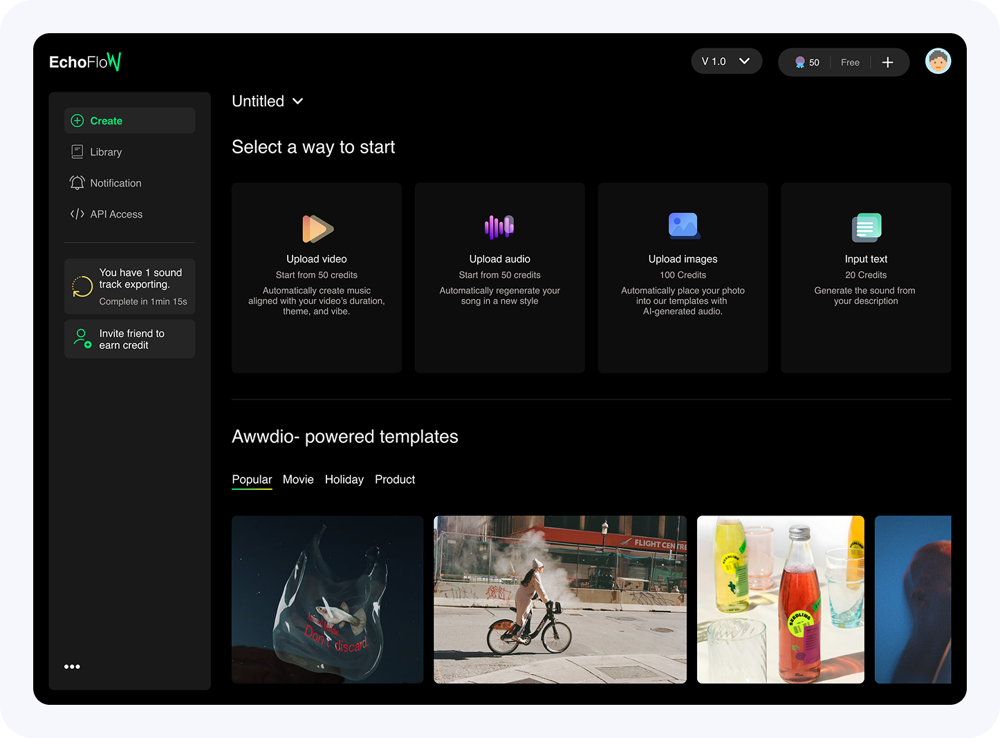
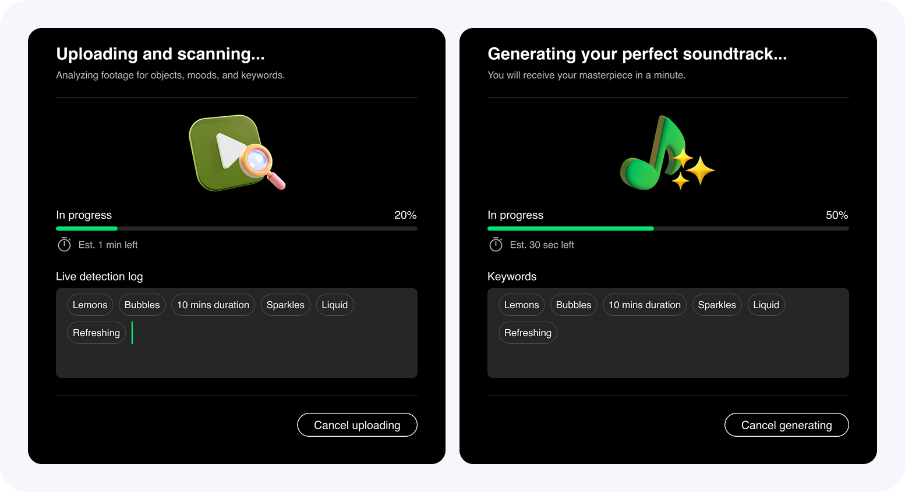
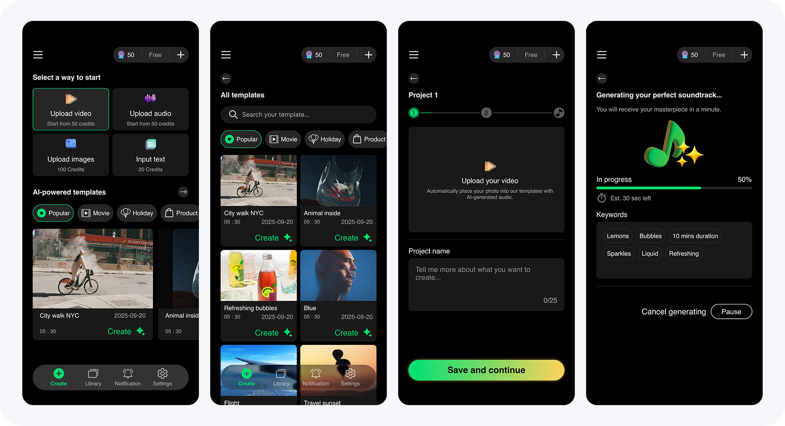

EchoFlow is a first-of-its-kind "remix" engine that automates high-fidelity music generation by analyzing video, image, and text inputs. I led the design from zero-to-one, transforming complex machine learning constraints into a seamless, human-centric creative workflow.
2025/01 - present
Gen-AI platform
Respo web/Mobile App
Lead designer
The goal is to bridge the "manual labor gap" in content creation by building an all-feature AI music creator that automates the synchronization of high-fidelity audio with visual media.
Sourcing music that perfectly aligns with the specific mood, topic, and emotional flow of a video or image is traditionally a manual, time-consuming, and expensive endeavor.



